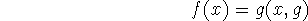

The formalism previously described enables us to define functions that have functions as arguments. For example,
can be regarded as a function of the numbers m and n and the
sequence  . If we regard the sequence as a function f we can write the recursive definition
. If we regard the sequence as a function f we can write the recursive definition
or in terms of the conventional notation
Functions with functions as arguments are called functionals.
Another example is the functional least(p) which gives the least integer n such that p(n) for a predicate p. We have
where
In order to use functionals it is convenient to have a notation for naming
functions. We use Church's [1] lambda notation. Suppose we have a function f
defined by an equation where e is some expression in  . The name of this function is . For example, the name
of the function f defined by
. The name of this function is . For example, the name
of the function f defined by  is .
is .
Thus we have
but
The variables occurring in a definition are dummy or bound variables and can be replaced by others without changing the function provided the replacement is done consistently. For example, the expressions
and
all represent the same function.
In the notation is represented by and the least
integer n for which  is represented by
is represented by
When the functions with which we are dealing are defined recursively, a difficulty arises. For example, consider factorial defined by
The expression
cannot serve as a name for this function because it is not clear that the occurrence of ``factorial'' in the expression refers to the function defined by the expression as a whole. Therefore, for recursive functions we adopt an additional convention, Namely,
stands for the function f defined by the equation
where any occurrences of the function letter f within e stand for the function being defined. The letter f is a dummy variable. The factorial function then has the name
and since factorial and n are dummy variables the expression
represents the same function.
If we start with a base domain for our variables, it is possible to consider a hierarchy of functionals. At level 1 we have functions whose arguments are in the base domain. At level 2 we have functionals taking functions of level 1 as arguments. At level 3 are functionals taking functionals of level 2 as arguments, etc. Actually functionals of several variables can be of mixed type.
However, this hierarchy does not exhaust the possibilities, and if we allow functions which can take themselves as arguments we can eliminate the use of label in naming recursive functions. Suppose that we have a function f defined by
where is some expression in x and the function variable f. This function can be named
However, suppose we define a function g by

or
We then have

since g(x,g) satisfies the equation

Now we can write f as

This eliminates label at what seems to be an excessive cost. Namely, the
expression gets quite complicated and we must admit functionals capable of
taking themselves as arguments. These escape our orderly hierarchy of
functionals.